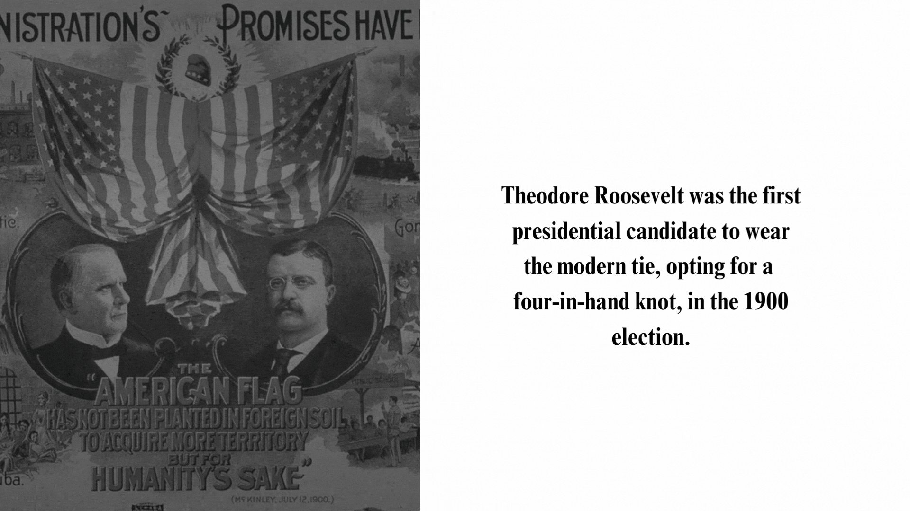

Almost all successful candidates have worn four-in-one knots, while many unsuccessful ones have opted for windsors. Only one Democratic successful candidate, Bill Clinton, wore a windsor knot. Only two other candidates have been successful wearing a Windsor knot, and they were Republican. Four-in-Hand and Windsor knots have become popular players in presidential debates: worn by almost all candidates as a symbol of professionalism and power. Theodore Roosevelt was the first candidate to wear a tie, a four-in-hand knot, in the 1900 election. Then, in 1920, it seemed like everyone was wearing ties, following in President Roosevelt's direction with four-in-hand knots. Republican candidates like President Eisenhower and Nixon opted for larger knots. While some Democratic candidates like President Kennedy chose a smaller knot. However, President Eisenhower was the first successful candidate to sport a Windsor knot. President Jimmy Carter wore a four-in-one hand knot, but opted for earth-toned colors: different from his peers. Almost all other Presidents wore dark colors, or bright reds and blues.
What tie would you choose?